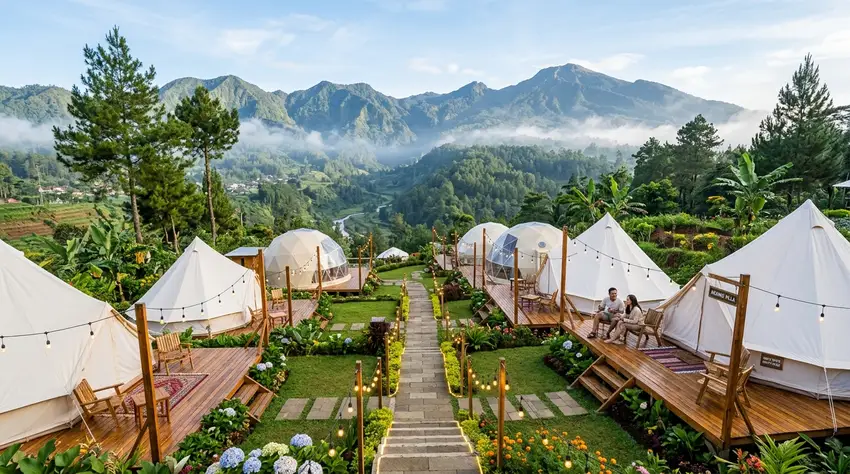

Wisata outdoor di Batu mencakup paralayang tandem, glamping, dan camping ground di dataran tinggi Jawa Timur. Pilihan terbaik bergantung pada anggaran, tingkat kenyamanan, dan jumlah peserta.
Ringkasan Inti
- Wisata outdoor di Batu terdiri dari tiga pilar utama: terbang paralayang, menginap glamping, dan berkemah di camping ground.
- Kota Batu berada di dataran tinggi sekitar 700 hingga 1.700 meter di atas permukaan laut, sehingga udaranya sejuk sepanjang tahun.
- Biaya sangat bervariasi: camping ground umumnya paling hemat, glamping berada di tengah hingga tinggi, dan paralayang dihitung per penerbangan.
- Musim kemarau umumnya lebih aman untuk aktivitas udara dan menginap di ruang terbuka.
- Pemilihan lokasi sebaiknya mempertimbangkan akses jalan, fasilitas, keselamatan, dan ulasan terbaru.
Apa Itu Wisata Outdoor di Batu?
Wisata outdoor di Batu adalah rangkaian kegiatan wisata di ruang terbuka Kota Batu, seperti terbang paralayang, berkemah, dan menginap di tenda berfasilitas hotel.
Kota Batu terletak di Provinsi Jawa Timur, berdekatan dengan Kota Malang dan Kabupaten Malang. Wilayah ini dikelilingi pegunungan dan perbukitan. Kondisi tersebut membuat Batu menjadi salah satu tujuan utama wisata alam di Jawa Timur.
Secara umum, wisata outdoor di Batu cocok untuk keluarga, pasangan, komunitas, dan wisatawan yang mencari suasana berbeda dari kota. Manfaat utamanya adalah udara sejuk, pemandangan alam, dan beragam tingkat kenyamanan. Batasannya adalah cuaca yang dapat berubah cepat, terutama pada musim hujan, dan kepadatan pengunjung pada akhir pekan serta libur panjang.
Mengapa Batu Cocok untuk Wisata Outdoor?
Batu cocok untuk wisata outdoor karena posisinya di dataran tinggi, suhunya sejuk, topografinya berbukit, dan aksesnya relatif dekat dari kota-kota besar di Jawa Timur.
Menurut gambaran geografis umum yang dipublikasikan pemerintah daerah, Kota Batu berada pada ketinggian sekitar 700 hingga 1.700 meter di atas permukaan laut. Data klimatologi umum dari BMKG menunjukkan bahwa suhu rata-rata di dataran tinggi seperti ini berada kisaran 18 hingga 24 derajat Celsius dalam gambaran tahunan. Angka tersebut dapat bervariasi menurut lokasi dan musim.
Topografi berbukit menciptakan titik pandang yang luas untuk paralayang. Lahan yang berkontur juga menghadirkan banyak area terbuka untuk camping dan glamping. Faktor lain adalah ekosistem wisata yang sudah berkembang, mulai dari penginapan, kuliner, hingga transportasi lokal.
Apa Saja Pilihan Wisata Outdoor Utama di Batu?
Tiga pilihan utama wisata outdoor di Batu adalah paralayang tandem untuk pengalaman udara, glamping untuk menginap nyaman, dan camping ground untuk berkemah hemat.
Setiap pilihan melayani kebutuhan yang berbeda. Paralayang menawarkan sensasi dan pemandangan dari ketinggian. Glamping menawarkan pengalaman alam tanpa kerepotan membawa perlengkapan. Camping ground menawarkan kebebasan, kebersamaan, dan biaya yang umumnya paling rendah.
Wisatawan dapat menggabungkan ketiganya dalam satu perjalanan. Contohnya, terbang paralayang pada pagi hari, lalu menginap di glamping atau camping ground pada malam harinya.
Paralayang Tandem di Gunung Banyak
Paralayang tandem di Gunung Banyak adalah penerbangan berdua bersama pilot berpengalaman dari area lepas landas di perbukitan Batu. Lokasi ini dikenal luas sebagai salah satu titik paralayang populer di Batu. Penerbangan tandem tidak mensyaratkan keahlian khusus dari penumpang. Pilot yang mengendalikan sayap, sedangkan penumpang mengikuti arahan saat lepas landas dan mendarat. Pembahasan lengkap tentang biaya, durasi, dan persiapan tersedia di artikel panduan paralayang tandem di Gunung Banyak.
Glamping di Batu
Glamping di Batu adalah penginapan bergaya tenda atau kabin outdoor dengan fasilitas mendekati hotel, seperti kasur, kamar mandi, dan listrik. Format ini cocok bagi wisatawan yang ingin suasana alam tanpa harus mendirikan tenda sendiri. Kisaran harga, jenis akomodasi, dan fasilitas dapat sangat berbeda antarpengelola.
Camping Ground di Batu
Camping ground di Batu adalah area berkemah yang dikelola, dengan fasilitas dasar seperti toilet, air bersih, dan area parkir. Pilihan ini umumnya paling ekonomis. Pengunjung dapat membawa tenda sendiri atau menyewa perlengkapan.

Pemandangan perkemahan dan kenyamanan akomodasi glamping di tengah asrinya alam Batu Malang.
Berapa Kisaran Biaya Wisata Outdoor di Batu?
Biaya wisata outdoor di Batu bervariasi: camping ground umumnya mulai dari puluhan ribu rupiah per orang, glamping dari ratusan ribu per malam, dan paralayang tandem dihitung per penerbangan.
Angka pasti dapat berubah menurut musim, hari kerja atau akhir pekan, dan kebijakan pengelola. Pada periode libur panjang, tarif sering lebih tinggi dan ketersediaan lebih terbatas. Karena itu, wisatawan sebaiknya mengonfirmasi harga terbaru langsung ke pengelola sebelum berangkat.
Beberapa komponen biaya yang perlu diperhitungkan:
- Tiket masuk kawasan atau retribusi parkir.
- Biaya aktivitas, misalnya penerbangan tandem atau sewa tenda.
- Biaya menginap, termasuk sarapan bila tersedia.
- Biaya makan, transportasi, dan perlengkapan tambahan seperti jaket dan sleeping bag.
- Biaya dokumentasi foto atau video bila ditawarkan terpisah.
Kapan Waktu Terbaik untuk Wisata Outdoor di Batu?
Waktu terbaik untuk wisata outdoor di Batu umumnya pada musim kemarau, saat langit lebih cerah, jarak pandang lebih baik, dan risiko hujan deras lebih rendah.
Aktivitas udara seperti paralayang sangat bergantung pada angin dan cuaca. Pengelola dapat menunda atau membatalkan penerbangan bila kondisi tidak aman. Untuk berkemah, hujan deras meningkatkan risiko tenda basah, tanah licin, dan suhu malam yang terasa lebih dingin.
Wisatawan dapat memantau prakiraan cuaca resmi melalui situs BMKG di bmkg.go.id. Pagi hari umumnya lebih tenang dan cerah dibanding sore hari, sehingga banyak wisatawan menjadwalkan aktivitas utama pada pagi.
Bagaimana Cara Memilih Wisata Outdoor yang Tepat?
Cara memilih wisata outdoor yang tepat adalah menyesuaikan pilihan dengan anggaran, jumlah peserta, tingkat kenyamanan, usia, dan kondisi fisik seluruh anggota rombongan.
Berikut parameter penilaian yang dapat digunakan:
- Anggaran: camping ground cocok untuk anggaran terbatas, sedangkan glamping dan paralayang membutuhkan anggaran lebih besar.
- Kenyamanan: glamping lebih nyaman bagi keluarga dengan anak atau lansia.
- Sensasi: paralayang cocok bagi pencari pengalaman ketinggian.
- Kebersamaan: camping ground cocok untuk kelompok besar dan komunitas.
- Keselamatan: pilih pengelola yang menyediakan pemandu, perlengkapan layak, dan prosedur jelas.
Setiap opsi memiliki batasan. Paralayang bergantung pada cuaca dan umumnya memiliki batas berat badan atau kondisi kesehatan tertentu. Glamping dapat penuh saat musim liburan. Camping ground memerlukan persiapan lebih banyak dan toleransi terhadap udara dingin.
Apa Kesalahan Umum Saat Merencanakan Wisata Outdoor di Batu?
Kesalahan umum dalam wisata outdoor di Batu meliputi tidak memesan jauh hari, mengabaikan prakiraan cuaca, membawa pakaian kurang hangat, dan tidak memeriksa fasilitas lokasi.
Kesalahan pertama adalah berkunjung pada akhir pekan atau libur panjang tanpa reservasi. Akibatnya, pilihan akomodasi menipis dan harga naik. Kesalahan kedua adalah meremehkan suhu malam hari di dataran tinggi. Pakaian tipis sering membuat wisatawan tidak nyaman.
Kesalahan lain adalah memilih lokasi hanya berdasarkan foto media sosial. Foto tidak selalu menggambarkan kondisi jalan, kebersihan toilet, atau kapasitas area. Wisatawan sebaiknya membaca ulasan terbaru dan menghubungi pengelola sebelum memesan.
Apa Tips Praktis Agar Wisata Outdoor di Batu Lancar?
Tips utama agar wisata outdoor di Batu lancar adalah memesan lebih awal, membawa pakaian berlapis, memeriksa cuaca, dan mengonfirmasi fasilitas sebelum berangkat.
- Pesan akomodasi dan slot aktivitas beberapa hari atau minggu sebelumnya, terutama untuk akhir pekan.
- Bawa jaket, kaus kaki, penutup kepala, dan jas hujan ringan.
- Siapkan uang tunai dan metode pembayaran digital karena sinyal di beberapa titik dapat terbatas.
- Datang lebih awal untuk menghindari kemacetan menuju kawasan wisata.
- Ikuti arahan pemandu dan petugas lokasi, terutama pada aktivitas berisiko seperti paralayang.
- Jaga kebersihan dan bawa kembali sampah pribadi.
Apa Saja Perlengkapan yang Perlu Disiapkan?
Perlengkapan utama untuk wisata outdoor di Batu adalah pakaian hangat, alas kaki nyaman, jas hujan, senter, obat pribadi, dan alat pembayaran.
Untuk paralayang, kenakan pakaian yang nyaman dan sepatu tertutup dengan sol yang kuat. Untuk camping, bawa tenda, alas tidur, sleeping bag, dan alat masak bila diperlukan. Untuk glamping, perlengkapan yang dibawa lebih sedikit karena sebagian besar disediakan pengelola, tetapi pakaian hangat dan perlengkapan mandi tetap dianjurkan.
Apakah Wisata Outdoor di Batu Aman untuk Anak dan Lansia?
Wisata outdoor di Batu umumnya dapat dinikmati anak dan lansia bila memilih aktivitas yang sesuai, seperti glamping atau camping ground berfasilitas lengkap, dengan pengawasan memadai.
Paralayang memiliki persyaratan usia, berat badan, dan kondisi kesehatan yang ditentukan pengelola. Anak dan lansia perlu menanyakan ketentuan tersebut terlebih dahulu. Untuk menginap, jalur akses yang landai, toilet bersih, dan akomodasi yang hangat menjadi pertimbangan penting. Bagi orang dengan kondisi kesehatan tertentu, konsultasi dengan tenaga kesehatan sebelum beraktivitas di ketinggian dianjurkan.
FAQ
Paralayang, glamping, dan camping ground termasuk wisata outdoor yang paling banyak dicari di Batu. Ketiganya melayani kebutuhan berbeda, mulai dari sensasi ketinggian hingga menginap hemat di alam.
Biaya liburan outdoor di Batu bervariasi menurut aktivitas, musim, dan fasilitas. Camping ground umumnya paling hemat, sedangkan glamping dan paralayang memerlukan anggaran lebih besar. Konfirmasi harga terbaru ke pengelola sebelum berangkat.
Paralayang tandem umumnya dilakukan bersama pilot berpengalaman dan mengikuti prosedur keselamatan, tetapi risiko tetap ada dan bergantung pada cuaca. Pilih pengelola yang memiliki pilot terlatih dan perlengkapan terawat.
Glamping umumnya lebih nyaman karena menyediakan tempat tidur, listrik, dan kamar mandi. Camping lebih hemat dan fleksibel, tetapi menuntut persiapan perlengkapan dan toleransi terhadap udara dingin.
Pemesanan sebaiknya dilakukan beberapa hari hingga beberapa minggu sebelum berangkat. Untuk akhir pekan dan libur panjang, pemesanan lebih awal membantu menghindari kehabisan tempat dan lonjakan harga.